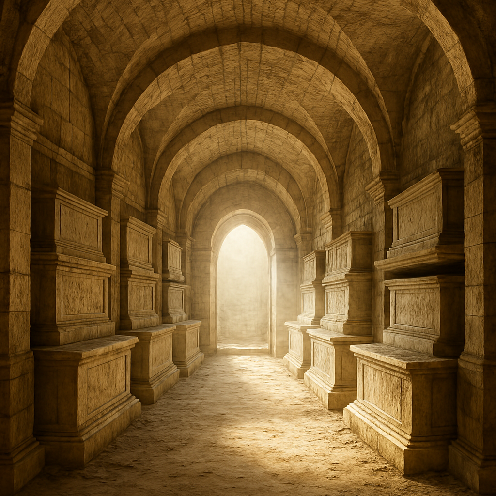

A kripta belsejét sűrű sötétség tölti meg, és csak a fáklyád imbolygó fénye töri meg a teljes homályt. A kőfalakat évszázados korom borítja, a padlóköveken régi csontok hevernek. Nemsokára egy elágazáshoz érsz. Balra egy lefelé vezető, szűk, meredek lépcső folytatódik a sötétségbe, ahol halvány vörös izzás dereng. Jobbra egy boltíves átjáró mögött halvány, meleg fény sejlik fel – mintha valami mágikus világosság világítana onnan.
Ha balra mész: menj a 4-es bekezdésre.